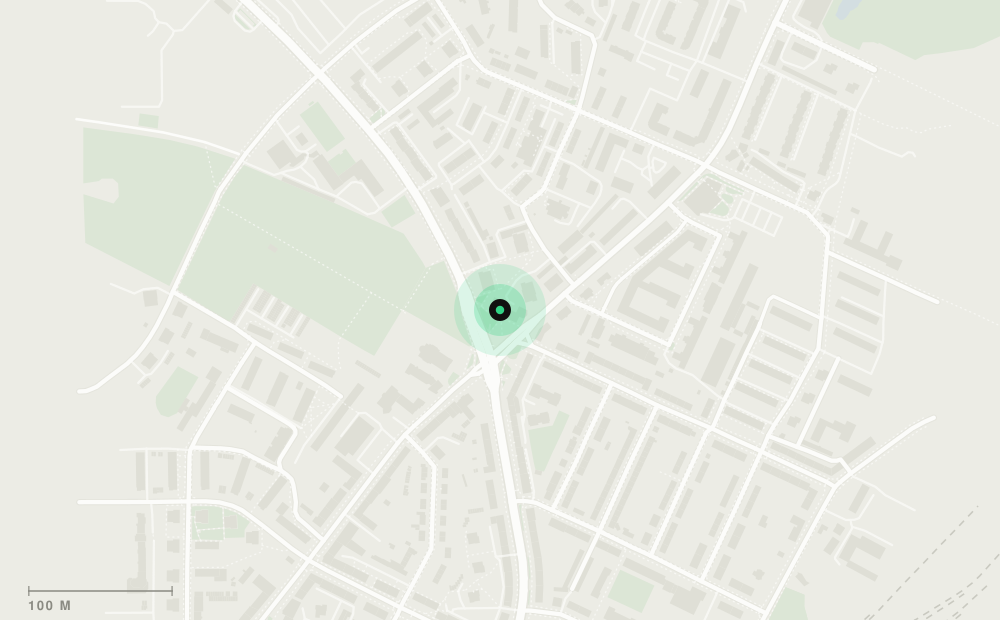
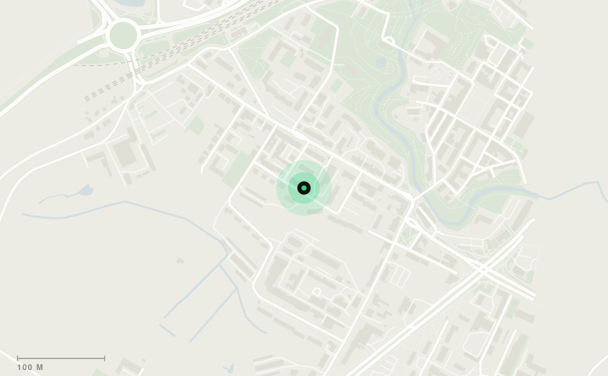

Biuro fundacji: 604 110 894 · biuro@artoffnia.plPracownie otwieramy pół godziny przed rozpoczęciem zajęć.


Dane fundacji: Fundacja Tańca i Sztuki ARToffNIA · al. Sybiraków 2, 10-257 Olsztyn · NIP 7393869128 · REGON 281616648 · KRS 0000518782